но сегодня мы отправимся в путешествие твоего рождения.
Вступление
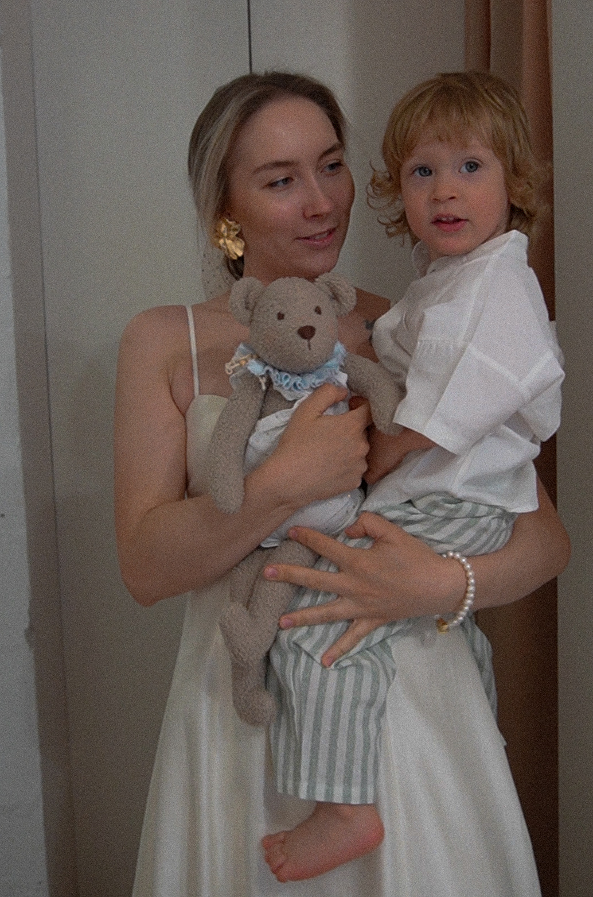
Здравствуйте, —, меня зовут Даша, и я рада, что вы здесь.
Для меня — думаю, как и для вас — этот мишка не просто игрушка. Это реликвия. Память о моменте, который проходит так быстро, что успеваешь только моргнуть.
Когда мой младший сын появился на свет, я не могла взять его на руки целую неделю. Я не ощутила тот самый новорождённый вес — лёгкий, тёплый, умещающийся на ладони. Но дети растут так быстро, что этот миг остаётся лишь воспоминанием, по которому так часто тоскуешь.
Именно поэтому я понимаю, как каждой маме хочется сохранить этот момент. Снова ощутить тот вес и рост. Обнять своего малыша таким, каким он был в самом начале. И каждый раз — когда ему плюс неделя, месяц, год — возвращаться к тому первому, ценному мигу.
Сразу хочу сказать: процесс создания такого мишки — это творчество. Настоящее. Непредсказуемое. Так же, как наше тело девять месяцев создаёт уникального человека, вы станете создателем новорожденного мишки и внесёте в него свои штрихи. Что-то может не получиться с первого раза (будьте к этому готовы), могут возникнуть сомнения и противоречивые эмоции. Примите их, проживите — и идите дальше. Я рядом, и у вас всё получится.
В этом мастер-классе вы найдёте всё что нужно: выкройки трёх размеров, видеосопровождение каждого этапа и список материалов с прямыми ссылками. Я также поделюсь своими советами — теми самыми деталями, которые делают мишку особенным.
Мастер-класс устроен так, что вы всегда можете вернуться к нужному этапу — видео тоже разбиты по шагам специально для этого. Не обязательно делать всё за один присест: дайте себе столько времени, сколько нужно. А если вдохновение накрыло с головой — дерзайте, один вечер, и ваш малыш будет готов.
Мы рядом
Если что-то пошло не так или остался вопрос — пишите нам, разберёмся вместе.
Александра, куратор мастер-класса — первичная связь по всем вопросам.
Telegram: @cosannee · WhatsApp/другие мессенджеры: +7 999 616-71-50
Даша — автор и создатель Марковки. Отвечает на вопросы по процессу шитья и делится личным опытом.
Как устроен этот МК — читайте прежде чем начать
Я поведу вас за руку. Никаких лишних слов — только шаг за шагом, от первого стежка до готового мишки.
Навигация по этапам всегда под рукой — в оглавлении ниже. Можно вернуться к любому моменту в любое время.
Список материалов
Убедитесь что у вас есть всё необходимое — ниже полный список с прямыми ссылками. Сначала обязательные позиции, затем по желанию, затем для удобства.
В швейную машинку капроновые нитки не вставлять — машинка их не выдержит.
Цвет №1002 (носик для мышки/котика/зайки) — на Wildberries
Подойдут любые нитки похожей толщины и оттенка.
Словарик шитья
Если вы шьёте впервые — здесь объяснения терминов, которые встретятся в МК.
Выкройки
Всего три размера — под разный рост малыша. Для вашего малыша с ростом — см подходит:
Выберите ту, что ближе всего к росту вашего ребёнка. Если рост ровно на границе — берите больший размер, лучше немного подогнать, чем не хватит ткани.
Распечатайте вашу выкройку в оригинальном размере — без масштабирования, иначе мишка получится не того роста. В настройках печати выберите «реальный размер» или «100%».
На каждом листе выкройки есть контрольный квадрат со стороной 5 см. После печати измерьте его линейкой — если квадрат ровно 5×5 см, масштаб верный и можно вырезать. Если больше или меньше — проверьте настройки принтера и распечатайте снова.
Припуски на швы на выкройке не обозначены — добавляйте их самостоятельно при раскрое. Стандартный припуск — 0,5 см от контура детали.
Если на этапе есть видеоурок — обязательно смотрите его и делайте по нему. Некоторые технические моменты через текст сложно передать так же наглядно, как в видео.
Раскрой
Разложите ткань букле на ровной поверхности — лучше на столе, можно на полу. Сложите её пополам лицевой стороной внутрь, расправьте так чтобы не было ни одной складки. Ткань должна лежать спокойно — от этого зависит аккуратность всех деталей.
Разложите выкройки на ткани, оставляя между ними достаточно пространства — минимум 1–1,5 см. Это важно: при вырезании вам понадобится припуск на шов 0,5 см от каждого контура, и если выкройки лежат вплотную, места может не хватить. Закрепите каждую деталь булавками по краю или специальными грузиками — чтобы ничего не съехало в процессе. На фото ниже покажу примерное расположение.
Теперь обведите каждую деталь по контуру — портновским мелком, карандашом или исчезающим маркером. Не торопитесь здесь, линия должна быть чёткой. Обвели? Аккуратно снимите выкройки.
Перед вами на ткани — все детали будущего мишки: голова, туловище, две ручки, две ножки и два ушка.
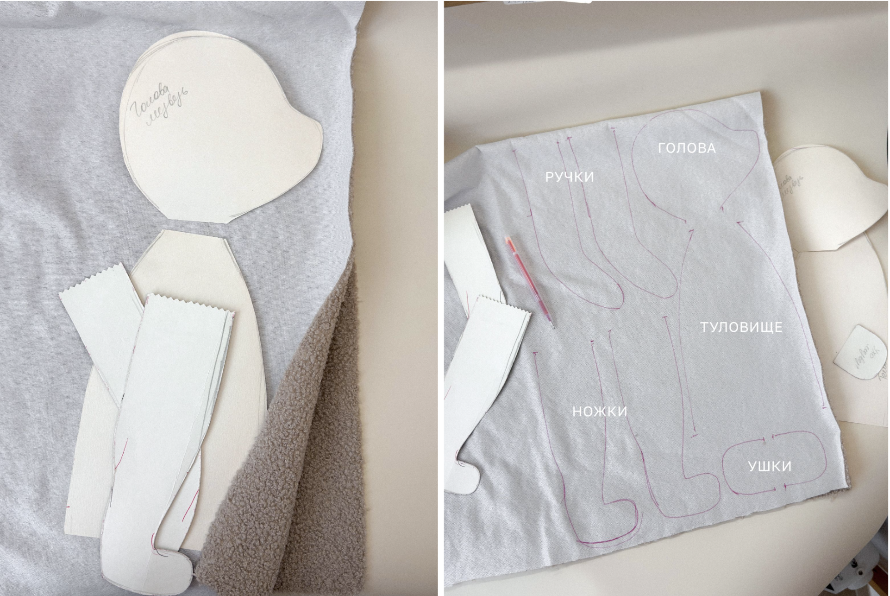
Сшивание
Вот он — момент когда мишка начинает обретать форму. Выберите удобный для вас способ.
Вариант 1 — Машинная строчка быстро и надёжно
Помните — мы ещё ничего не вырезали, все детали по-прежнему на одном полотне. Выберите с чего начнёте — например, с головы — и начните прострачивать по намеченному контуру этой детали. Сложите ткань так, чтобы лицевые стороны были внутри, и прострочите по линии — без пропусков, ровно по контуру. На каждой детали отмечен свободный край — оставьте его, через него мы будем выворачивать и набивать мишку.
Длина стежка — 2–2,5 мм. На закруглениях не торопитесь, ведите ткань плавно — именно здесь формируется аккуратный контур лапок и ушек.
Когда все детали прострочены — вырезайте с припуском 0,5 см от строчки.
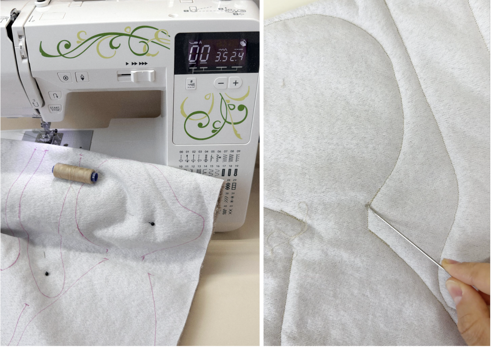
Вариант 2 — Ручной шов для тех, у кого нет машинки, но есть терпение и любовь
Используйте шов «назад иголку» (backstitch) — он прочный, аккуратный и отлично держит форму. Принцип простой: выведите иглу вперёд, сделайте стежок назад, затем снова вперёд — каждый следующий стежок перекрывает предыдущий. Старайтесь держать стежки одинаковой длины, около 3–4 мм.
Вырезайте с припуском 0,5 см после того как всё прошито.
На видео ниже показываю шов подробнее — посмотрите прежде чем начать, будет проще.
Выворачивание
Самый приятный момент — детали начинают оживать.
Выверните пока только голову, ушки, и лапки наполовину. Туловище оставляем на изнанке, об этом позже, в видео. Удобнее всего делать это деревянной палочкой или обратным концом кисточки — аккуратно, не торопясь, чтобы не потянуть швы.
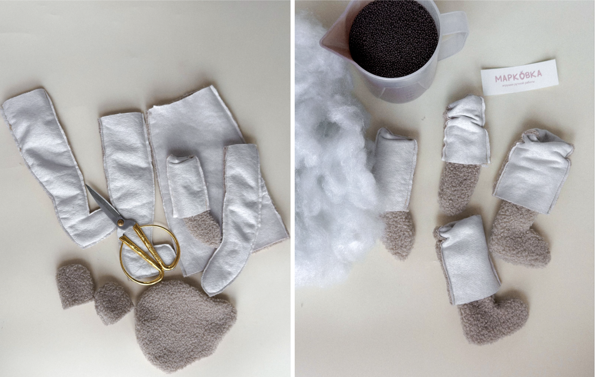
Теперь расправьте все закругления изнутри — пальцами протолкните ушки, лапки, мордочку. Букле немного пружинит, поэтому уделите этому чуть больше времени. Чем тщательнее расправите сейчас — тем аккуратнее будет готовый мишка.
Если есть желание — пройдитесь по деталям паром. Это не обязательно, но ткань станет мягче и набивать будет заметно легче.
Когда все детали вывернуты и расправлены — можно переходить к самому важному шагу.
Индивидуальный расчёт гранулята
Вот он — момент когда мишка начинает обретать вес вашего малыша. Гранулят распределяется по деталям не поровну — у каждой своя норма. Ориентируйтесь на таблицу ниже: она составлена под вашего малыша. Логика простая: сначала наполняете голову, затем конечности, взвешиваете всё вместе — и остаток гранулята досыпаете в туловище до нужного веса. Расчёт уже учитывает вес ткани и синтепуха — поэтому гранулята может понадобиться чуть меньше, чем точный вес малыша. Это нормально, взвешивание на этапе туловища всё покажет.
Голова и глазки
Глазки ставятся до набивки головы
Прежде чем набивать голову — установите глазки, пока она ещё пустая, так будет значительно удобнее.
Положите голову на стол и определите места для глазок — симметрично. Нужные точки уже отмечены на выкройке, которую мы вам дали — ориентируйтесь на них. Шилом аккуратно проткните насквозь обе толщи ткани. Вставьте пластиковые глазки на безопасном креплении и с обратной стороны плотно зафиксируйте колпачком. Убедитесь что глазки сидят ровно и симметрично — потом исправить уже не получится.
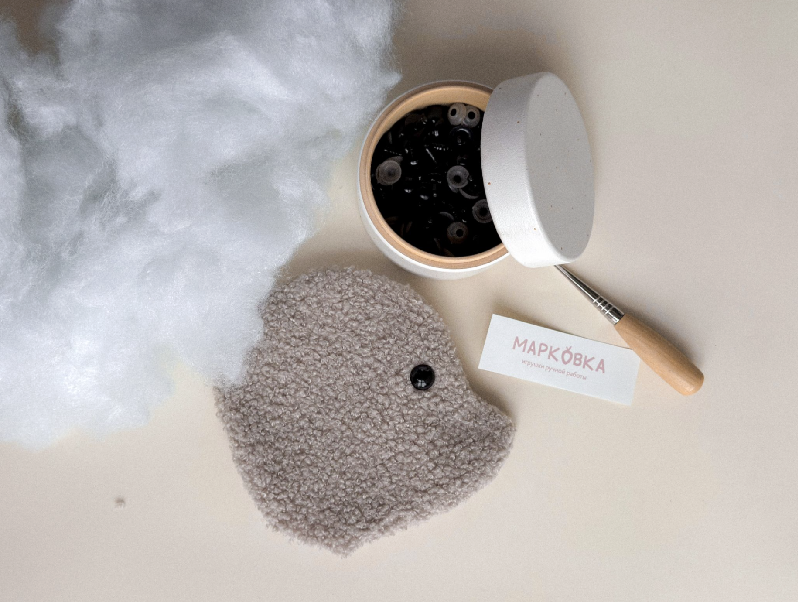
Голова
Наполните голову синтепухом примерно на треть. Особое внимание уделите мордочке и носику — пальцами проталкивайте наполнитель в самые дальние уголки, не оставляйте пустот.
Затем аккуратно засыпьте — гранулята. Сверху плотно утрамбуйте синтепухом. Готовая голова должна быть твёрдой и почти не проминаться при нажатии.
На этом этапе также моделируем мордочку — добавляем объёмы в щёчки, затылок, делаем по своему вкусу и усмотрению. При вертикальном положении головы гранулят не должен высыпаться, всё плотно, без пустот.
Взгляд
Нам понадобится капроновая нить и длинная толстая игла — с ней работать значительно удобнее.
Утяжка глаз
Проведите нить через открытое изголовье (которое мы ещё не затянули) и выведите у внутреннего уголка одного глазика — примерно в 2–3 мм от него. Сделайте небольшой стежок рядом и проведите нить к внутреннему уголку второго глазика.
Теперь утяжка. Просто тянуть за нить будет сложно — помогите себе руками: слегка сожмите мордочку, чтобы нить утянулась и глазки сблизились. Все последующие движения иглой делайте удерживая это натяжение — нить не должна расправляться.
Повторите движение от глазика к глазику 3–4 раза. Стежки у глаз делайте маленькими — чтобы нить не было видно. По желанию можно так же утянуть и внешние уголки глаз.
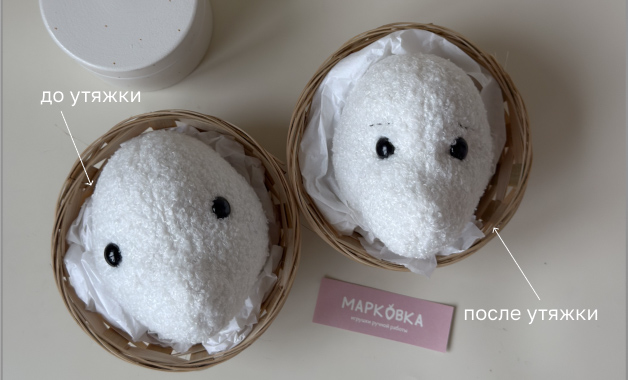
Бровки
Сразу после утяжки, не убирая натяжения, формируем бровки. На схеме ниже вы видите как форма бровок меняет выражение мишки — выберите то, что откликается вам. Можно заранее наметить бровки исчезающим маркером — так будет проще вышить ровно.
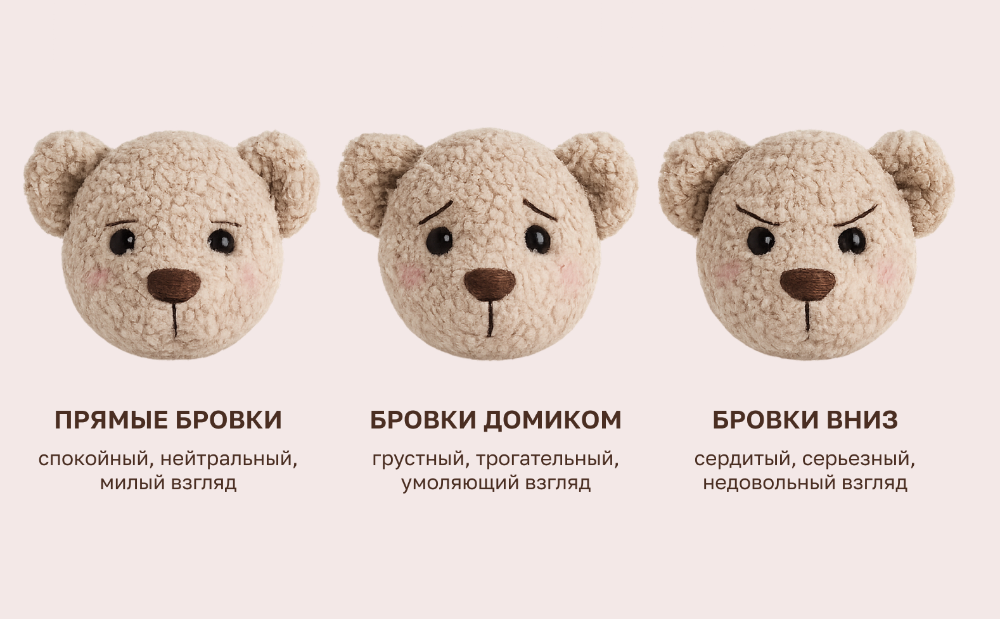
Выведите нить в начало первой бровки и проложите один стежок, выводя иглу сразу у начала второй. Не затягивайте сильно — бровки должны лежать мягко, но и не свободно. Иглой можно слегка взъерошить ткань под нитью — так она немного утонет и взгляд получится более живым. Проложите вторую бровку так же и сразу выведите нить через затылок, сделайте стежок и закрепите узелком.
Затягивание отверстия
Если нити достаточно — сразу затяните открытое отверстие. Если нет — отрежьте и заправьте новый отрезок 30–40 см.
Стяните отверстие длинными стежками по кругу со всех сторон. Помогайте себе рукой — нить легко выпрямляется, поэтому придерживайте натяжение пальцами пока прокладываете следующий стежок. Голова должна оставаться округлой, не сплющивайте её.
Моделируем форму головы
После того как отверстие зашито, голова часто выглядит слегка вытянутой — сейчас поправим это, чтобы она стала более круглой.
Завяжите узелок и введите иглу с нитью в вертикальный шов — примерно в 2–3 см от места, где было отверстие. Проведите иглу насквозь через голову и выведите её с противоположной стороны того же шва, на таком же расстоянии от отверстия.
Теперь аккуратно сожмите голову руками по бокам и одновременно потяните нить — она должна натянуться и слегка «перетянуть» голову, делая её круглее. Не отпуская натяжения, проложите ещё 4–5 стежков в том же месте — это закрепит нужную форму.
Завяжите несколько узелков, чтобы стяжка держалась крепко. Если нити осталось немного — можно добавить ещё пару стежков по голове без узелков, это не помешает. Обрежьте нить.
Лицо
Носик
Возьмите прочную чёрную или тёмно-коричневую нить — ирис в два сложения. Найдите центр мордочки и наметьте треугольник чуть ниже: ширина около 2 см, высота 1,5 см. Можно слегка обозначить контур исчезающим маркером — так будет проще вышивать ровно.
Заполняйте треугольник параллельными стежками — как гладь, плотно и аккуратно. Каждый стежок кладите рядом с предыдущим, следите чтобы нить натягивалась равномерно и не перекашивала мордочку. Спешить здесь не нужно — носик маленький, но именно он даёт мишке выражение.
Как только пройдёте первый слой и увидите, что где-то по краям стежки легли неровно или покрытие неплотное — пройдитесь снизу вверх вторым слоем, а затем сверху вниз третьим. Смотрите по своему визуальному предпочтению — носик будет становиться объёмнее и аккуратнее с каждым слоем.
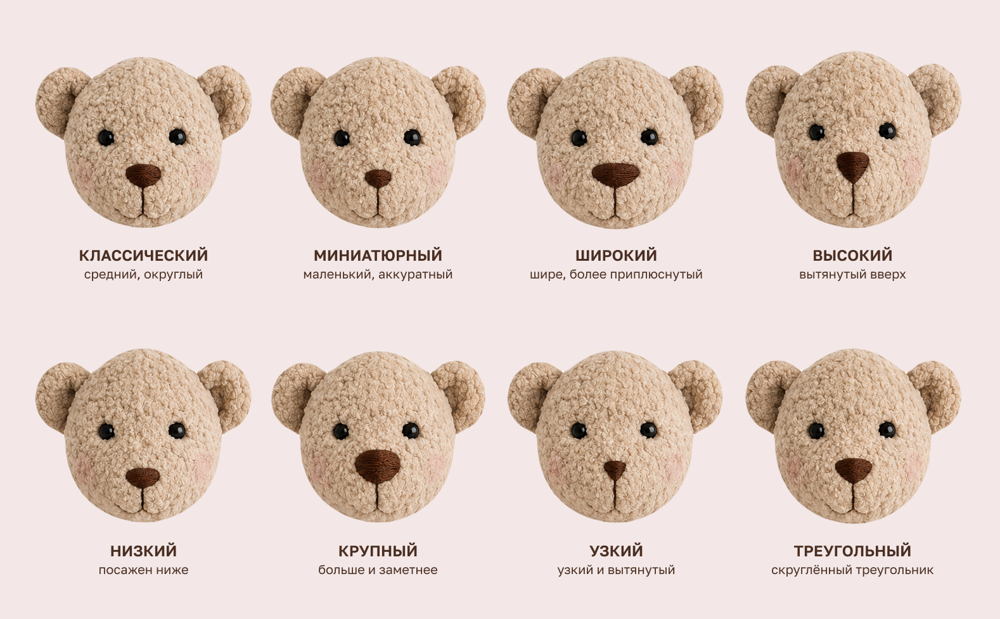
Когда закончите — спрячьте кончик внутрь головы через ближайший шов.
На видео ниже покажу как это выглядит в процессе и в готовом виде.
Ушки детали, которые делают его собой
Возьмите готовые вывернутые ушки. Подогните на 0,5 см открытый край и закройте его ручным стежком — слегка стягивая по мере шитья, чтобы ушко приобрело изогнутую, живую форму.
Теперь приложите ушки к голове и просто посмотрите. Не торопитесь. Здесь нет правильного и неправильного — только ваш вкус и, может быть, что-то неуловимое, что напоминает вам о вашем малыше. Когда место найдено — отметьте точки расположения ручкой или мелком для симметрии.
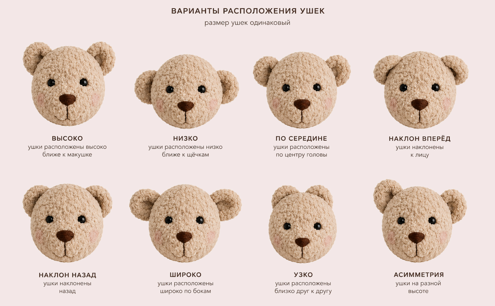
Пришейте ушки ручным швом капроновой нитью по кругу, вставляя поочерёдно иглу в ушко и в голову. Пройдитесь дважды для надёжности. Закрепите нить узелком, выведите иглу чуть в стороне и спрячьте кончик внутри.
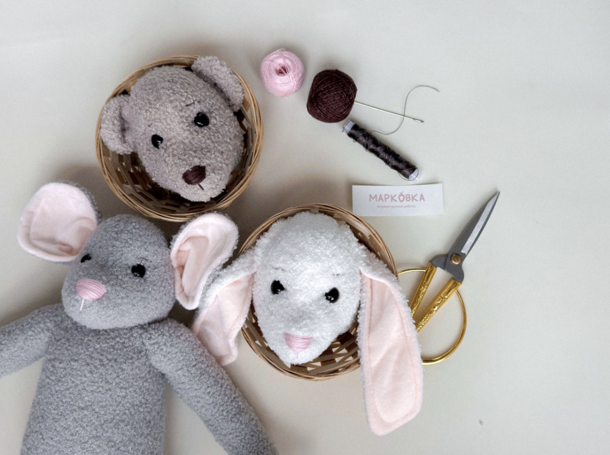
Наполнение лапок
Ручки 2 шт.
Начните с небольшого количества синтепуха — плотно заполните самый кончик, чтобы он не остался пустым. На схеме ниже показаны слои заполнения синтепуха и гранулята.
Затем добавьте — гранулята, сверху снова слой синтепуха и хорошо утрамбуйте. Досыпьте ещё — — итого — на каждую ручку.
Завершите синтепухом, оставив около 2–3 см свободным от края. Закройте отверстие машинной строчкой или потайным швом вручную по схеме ниже. Повторите для второй ручки.

Ножки 2 шт.
Начните со ступни — плотно набейте синтепухом самую нижнюю часть, хорошо трамбуйте чтобы ножка держала форму.
Добавьте — гранулята, затем снова синтепух и ещё — — итого — на каждую ножку.
Завершите синтепухом, оставив 2–3 см до края. Зашейте отверстие по схеме ниже и повторите для второй ножки.
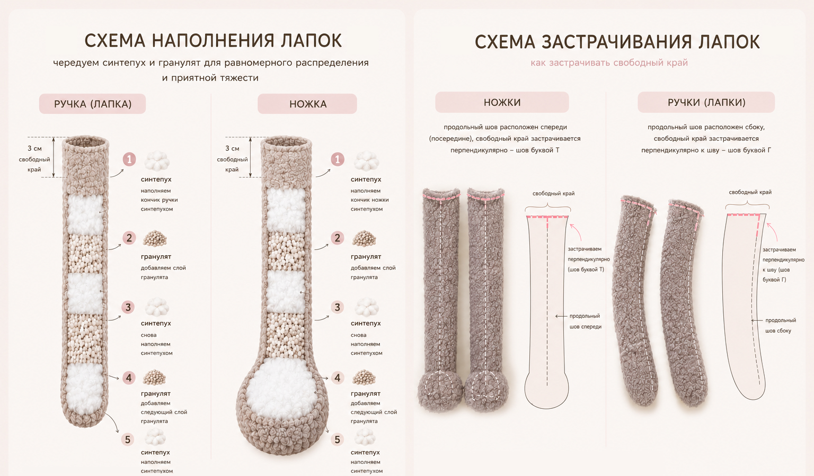
Вшиваем ножки в туловище
У туловища два открытых края — сверху (поуже) и снизу (пошире). Снизу будем вшивать ножки. Обратите внимание: туловище сейчас вывернуто на изнанку, лицевая сторона внутри — так и должно быть.
Вставьте ножки в нижнее отверстие (широкое) лапками внутрь и выровняйте их по высоте — это важно, иначе мишка будет «прихрамывать». Закрепите булавками или сметайте вручную чтобы ничего не сдвинулось. Прострочите на машинке или прошейте крепким ручным швом «назад иголку».

Выверните туловище через узкое отверстие на лицевую сторону — ножки уже на месте.
Наполнение туловища, подгонка роста и веса
Наполнение туловища
Шаг 1. Засыпьте первые — гранулята. Утрамбуйте синтепухом, плотно забивая уголки и нижнюю часть туловища.
Шаг 2. Досыпьте ещё — гранулята и снова утрамбуйте синтепухом — доведите до половины туловища. Нижняя половина должна быть плотной, без пустот.
Взвешиваем и подгоняем вес
Когда нижняя половина плотно забита — соберите все части на кухонных весах: туловище с ножками (горлышком вверх, чтобы было удобно досыпать), ручки и голову. Взвесьте всё вместе.
Шаг 3. Досыпайте оставшийся гранулят — примерно — — до тех пор, пока на весах не будет целевой вес — минус 30–50 г — этот запас нужен чтобы закрыть гранулят синтепухом сверху. Закройте гранулят синтепухом.
Подгоняем рост
Положите на стол сантиметровую ленту, уложите голову у самого начала, а вплотную к ней — туловище. Подогните свободный край туловища до тех пор, пока длина не совпадёт с ростом — см. Имейте в виду: когда будете пришивать голову, шов заберёт ещё около 1 см — это нормально, учитывайте при замере.
Финальная проверка веса
Снова взвесьте всё вместе. При необходимости досыпьте недостающий гранулят. Оставьте 1–1,5 см свободного края от верха туловища — он нужен для пришивания головы.
Пришиваем ручки
Найдите боковые швы туловища — они станут ориентиром для симметричного расположения ручек. Шов должен приходиться ровно на середину ручки.
Возьмите капроновую нить с узелком, длиной около 1 метра. Пришейте первую ручку сверху по верхнему краю туловища. Той же нитью переходите ко второй ручке по горловине, слегка стягивая её — но не сильно, голова должна сесть красиво. Прошейте вторую ручку так же сверху. По второму краю горловины вернитесь к первой ручке и закрепите её с другой стороны.
Теперь возьмите новую нить с узелком. Поднимите лапку и вставьте иголку в подмышку — так спрячется узелок. Выведите иглу на боковом шве ручки сверху. Делайте стежки вниз, чередуя — стежок в тело, стежок в ручку — затягивая нить. Опускайтесь вниз на 3–4 см. Затем введите иглу в тело и выведите её наверх у начала ручки, плотно затяните нить и сделайте узелок. Пройдитесь швом под подмышкой по всей ширине — стежок в ручку, стежок в тело. На другом конце вернитесь в исходное положение ручки и пройдите по боковому шву с другой стороны. Затягивайте нить по мере шитья. Сверху сделайте узелок. Повторите для второй ручки.

После этого ещё раз проверьте рост мишки — всё ли совпадает с задуманным.
Пришиваем голову
Используйте плотную капроновую нить или сложите обычную в 4–6 слоёв. Начинайте с затылка, от центра, и двигайтесь по кругу — очень плотно стягивая голову и туловище между собой. Пройдитесь 2–3 полных круга, периодически закрепляя нить узелками по ходу. Когда голова надёжно зафиксирована — спрячьте нить внутри.

Он готов.
Возьмите его на руки. Закройте глаза.
Почувствуйте этот вес. Возможно, именно таким вы когда-то впервые держали своего малыша.
Пусть этот мишка станет для вашей семьи тёплым напоминанием о времени, которое так быстро проходит — но навсегда остаётся в сердце.
Спасибо, что доверили мне провести вас по этому пути.
И пожалуйста… покажите мне вашего малыша. Для меня нет большей радости, чем видеть, сколько любви рождается в ваших руках.
Бонус: одежда для мишки
Мишка сшит. Но, может быть, ему чего-то не хватает? Этот бонусный урок — для тех, кто хочет одеть своего малыша в крошечный костюмчик, сшитый специально под него.
Ромпер
Этап 1. Раскрой
Раскроите ткань по выкройке из материалов мастер-класса. Для удобства рекомендую сложить ткань пополам — тогда одна сторона ромпера получится со сгибом, и останется прошить только один боковой шов. Если раскроили деталь без сгиба — ничего страшного, просто получится два боковых шва вместо одного.
Этап 2. Боковые швы
Проложите строчку по боковому шву — на машинке или вручную тем же швом, что мы изучали в основном МК.
Этап 3. Обработка боковых срезов
Для аккуратности обработайте припуски оверлоком или строчкой «зигзаг». Если такой возможности нет — этот этап можно пропустить. На прочность изделия это не влияет, только на вид изнанки.
Этап 4. Нижний край
Подверните нижний край дважды — примерно на 0,5–1 см. Зафиксируйте булавками или намёткой и проложите строчку по всей окружности.
Этап 5. Проймы — места для ручек
Каждый срез подворачиваем дважды. Удобнее начинать с верхней вершины выреза. Из-за косого направления ткань может немного перекручиваться — это нормально, просто расправляйте по мере работы и фиксируйте булавками. Проложите строчку максимально близко к краю. Повторите для второй стороны.
Этап 6. Верхний край
Также двойной подгиб — но строчку прокладывайте максимально близко к внутреннему краю подгиба. Внутри должен остаться небольшой тоннель — позже сюда будет продеваться ленточка. Не забудьте сделать закрепки в начале и конце строчки.
Этап 7. Ножки
Разложите ромпер ровно, расправьте все швы. Приложите выкройку и перенесите на ткань линии шагового шва — ничего не вымеряем, просто прикладываем и отмечаем. Проложите строчку по отмеченным линиям, затем аккуратно вырежьте внутренний треугольник, оставляя припуск около 5 мм. При желании обработайте срез зигзагом.
Этап 8. Финальная обработка
Уберите все лишние ниточки. Хорошо отпарьте или прогладьте ромпер — это уберёт следы терморучки и расправит все швы. Посмотрите на него. Маленький, аккуратный, живой.
Этап 9. Надеваем
Сначала наденьте ромпер на мишку. Возьмите ленту, опалите её концы чтобы не осыпались. Цыганской иглой проденьте ленту через верхнюю кулиску ромпера. Затяните по размеру и завяжите бантик. Расправьте складочки.
Воротничок
Этап 1. Раскрой
Вырежьте полоску ткани длиной 80–90 см и шириной 10–15 см. Чем шире полоска — тем более объёмным получится воротничок. Здесь всё на ваш вкус.
Этап 2. Стачивание
Сложите полоску вдоль пополам и проложите строчку примерно 5 мм от края.
Этап 3. Обработка края
Классический вариант — рваный край. Ткань не разрезается ножницами, а аккуратно разрывается по долевой нити. После этого уберите свободные ниточки — получится мягкая бахрома, которая выглядит очень живо.
Ваш вкус
Все варианты одинаково хороши — выбирайте тот, что откликается:
- Рваный край — мягкий и природный
- Оверлок или зигзаг — аккуратный и чёткий
- Закрытый подгиб — самый деликатный вариант
Финал
Проденьте ленточку в воротничок и завяжите на шее мишки.
Вот теперь — он совсем готов. 🤍
Копирование материалов строго запрещено · Только для личного использования
Публичная оферта